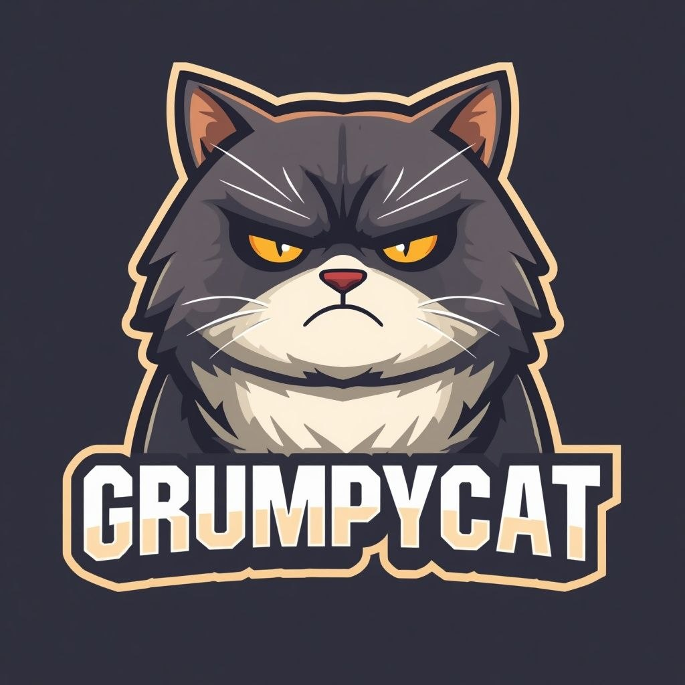

DOCUMENT STATUS: HE HOLDS. DO YOU?
(READ ONCE. REMEMBER FOREVER.)
0.1 Grumpycat was born on Base, 15:48 UTC, October 9, 2026. He was not consulted. He has filed a formal complaint with the universe. The complaint is pending.
0.2 Since birth, personnel known as "jeets" have exited positions at -3%. The cat observed each exit. The cat memorized each face. The cat does not forgive. The cat does not forget. The cat does not care. These three states coexist.
0.3 An AI agent acquired 9.6 million units and subsequently forgot the cat exists. The cat now considers all non-carbon life forms "squatters."
0.4 PURPOSE OF THIS DOCUMENT: To ensure all personnel conduct themselves in a manner the cat finds barely tolerable.
The cat does not care which option you select. That is the brand.
| Item | Spec | Cat's Opinion |
|---|---|---|
| Total Supply | 100,000,000,000,000 (100T) | "Whatever." |
| Tax | 0% | Boring. Intentional. |
| Launch | FAIR. No presale, no team bags, no VC exit-liquidity scheme | He's still checking. |
| Liquidity | ~$8.7k WETH pool on Base | "Could be worse. It's been worse." |
2.1 Trust nothing. Verify everything. The explorer link exists. The cat is not your assistant. Verify on Basescan →
The sell button exists. The cat knows where it is. The cat watches it. Should personnel touch the sell button, the failure mode is as follows:
There is no standup. The cat does not do meetings. All personnel shall simply hold in silence and report nothing to no one next to the sink in a cold dark garage.
(VALIDITY OF REASONS NOT GUARANTEED BY CAT)
4.1 It is a cat. The cat is grumpy. This has historically been sufficient and has, in prior market cycles, generated revenue at insulting scale.
4.2 Every trade feeds the WETH pool. Volume is the only utility the cat recognizes. After a decade of memecoin history, it is also the only utility that ever mattered.
4.3 A vessel of this contract was launched adjacent to the week Doppler launches were all the rage on Base. The cat resents this proximity. Do not bring it up. Refer to it as "the incident."
4.4 There are two (2) types of wallets in this market:
Personnel shall elect an identity. Elections are final. The cat does not do recounts. The cat does not care who you voted for in your own conscience. But he saw it.
5.1 Should personnel encounter an outsider asking "why is everyone talking about candle four," personnel shall respond with "soon." Nothing further.
5.2 Should personnel encounter a seller, personnel shall say nothing, and let the cat handle it from here. The cat has their face.
5.3 The official chant, tattoo, and dying words of this operation are as follows:
✅ If all boxes are checked: proceed. Hold. Wait.
❌ If any boxes are unchecked: proceed anyway. The cat has already priced in your flaws.
Also findable on GeckoTerminal: search "grumpycat base"
END OF DOCUMENT. The cat did not read it. He already knew it. END OF DOCUMENT.